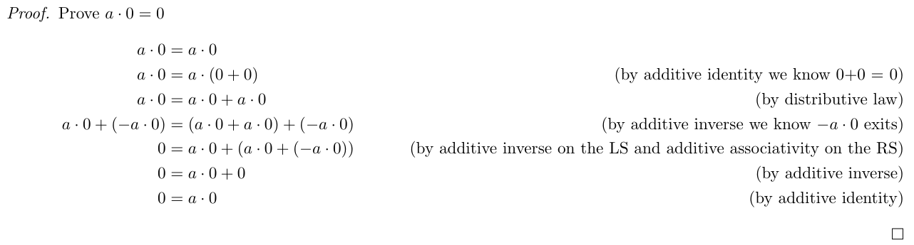
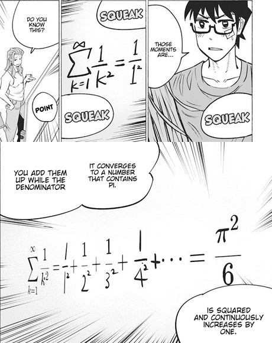
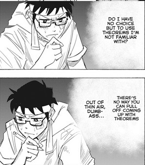
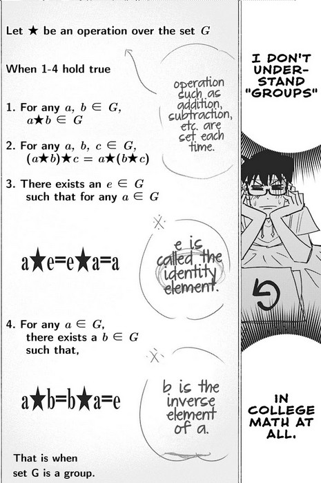

TLDR:
- Intimidating at first when learning about fields
- More difficult than MATH1152
- Know your delta-epsilon proofs and other definitions to prove whether a sequence or function converge
Professor: Charles Starling
Course Delivery: Asynchronous lectures with quizzes that have a 24-hour window
Class Size: Less than 75 students
Description: The course begins with fields, how to find the max and min from a set (along with finding the supremum and infimum of a set), the archimedean property, the denseness of $\mathbb{Q}$. Then the course covers sequences and how to find the limits for sequences and the limit laws for sequences (including infinite limits). Properties of sequences are also discussed such as what are monotone, Cauchy, and subsequences. Learning how to find whether or not a series converges is discussed in the course as well such as through the geometric, p-series, comparison, root test, etc. Then the course finally begins to start resembling to a calculus course where functions and their limits are discussed. Whether or not a function is continuous, how to compose continuous functions with other continuous functions, properties of continuous functions, the intermediate value theorem, uniform continuity. How to use sequences to prove that a function is not continuous at a certain point. Then the course covers differentiation which should be familiar to students already from Highschool such as how to use the chain rule. Some new topics covered that may not be familiar to students from Highschool calculus are the L’Hôpital Rule and anti-derivatives. The course has an emphasis on proofs and theory compared to a regular calculus course that a typical science or engineering student would have taken.

Review:
Note: The course was taken in 2021 during the pandemic so my experiences may be unique
This course covers a lot and goes through a lot of proofs in lectures so be prepared. I would not say it’s a somewhat difficult course and you do need to keep up with the lectures and understand the tutorial problems. Though I may be biased as I have taken calculus up to multivariable calculus at a University level many years ago so perhaps it’s actually very hard to others. Despite having prior experience in Calculus, I learned a lot and I am sure many others who also have taken calculus before would attest that this course is quite different from your regular calculus course for science, math majors, and engineering. As with MATH1152, the course starts in a weird way talking about fields. My prior experience with fields from a course I took many years ago at another University called Introduction to Mathematical Proofs (a course I almost failed but made me appreciate Math) so I was able to keep up. Some of the students felt overwhelmed as this was not what they were expecting to see from a Calculus course. You have to break down and rewind how you perform arithmetic and it can take a while to get used to. How can you show that 1 * 0 = 0. Most of us take them for granted and learn that the product of any number with a zero is zero. But in this course, you will need to prove this through the set of 9 axioms (rules) introduced in the course.

The biggest difference I see between regular math and honors math (I like to think of it as pure math) is the emphasis on proofs and theory. At a regular math course, you never need to prove any theorem and you take things for granted. You are given theorems, lemma, and corollary and used them to solve problems and you can live without truly understanding the theorem. Proofs are the argument that explains how and why the theorem is true and you can really get a lot from either reading or trying to write a proof to convince yourself that the theorem is true.
The next set of topics covered are learning about how to find the max and min in a set and their supremum and infimum if it exists. This is also a topic that is not covered in a typical calculus course. I enjoyed the fact that the course starts off differently from regular calculus because I was learning a lot of new things such as what the archimedean property is and the denseness of $\mathbb{Q}$ and how to use these properties to prove or disprove what the infimum and supremum are. Sequences and series are topics that are covered in a calculus course. While I did not learn sequences and series in Calculus 1, I did learn about them in Calculus II very briefly. Calculus 1 usually focuses on functions rather than looking at sequences and series from my personal experience and I think the same applies at CarletonU since I do not see sequences being mentioned in the course description for MATH1004 nor in MATH1007.

Although I did learn about sequences and series briefly in Calculus before, it was not in-depth compared to what MATH1052 covers. I did not recall ever learning about finding the limits of sequences, the Bolzano-Weierstrass Theorem, what a Cauchy or a subsequence is and the theorems associated with them such as the fact that if a sequence converges to some number L then the subsequence converges to the same number. Since this is a calculus course, the subject of continuity is greatly discussed in the course. The course goes over continuity for not only functions but also for sequences. I do recall learning about the Squeeze theorem and the Intermediate Value Theorem in my previous experience with calculus but I never needed to use them (aside from the Squeeze theorem which I think was used for a test question). Anyhow the course goes over more in-depth about what it means for a function to be continuous and ties in with sequences and how to prove whether a function is continuous using delta-epsilon proofs. I do not recall this being the focus of regular calculus but it was briefly taught and tested. But in this course, you’ll find yourself doing a lot of proofs to show whether a function or a sequence converges or diverges using delta-epsilon or some other definitions using other symbols such as using alpha or N depending on if you are proving limits of a sequence or a function or whether the limit “converge” to infinity (it’s weird since I learned it as diverges to infinity). This is where the course trips me off because a lot of these definitions used to prove different types of limits seem so similar to each other. Anyhow, the convergence proof is a lot harder than your typical convergence proof you may or may not have to do in a regular calculus course. Taking this course made me realize how little I learned in my regular calculus course which is good. That is the reason why I went back to University, to relearn and be exposed to materials that are not covered in a regular math course in hopes that I can one day be decent in Math for once (For context, I did very poorly in my Math courses when I first did my undergrad which is why my CGPA was never good despite doing well in most of my other courses I majored in).

The intermediate value theorem is such as useful theorem to know and I wished I knew about this when I was taking Calculus (I probably learned it but did not take advantage of this theorem). Finding the roots of an equation can be complicated so you could use the intermediate value theorem to conclude the roots exist and at least how many there are. You can couple this theorem with the mean value theorem or Rolle’s Theorem to indicate that there could only be x number of roots to the equation. I can say with confidence that a regular introductory calculus course will not require you to prove that an equation has exactly x number of roots because knowledge of proofs is not required in the course. But this is a Math course for honours students so there are a lot of proofs.
The course ends with topics that students should be quite familiar with from Highschool with some exceptions such as how to find the derivative of functions using limits, the various differentiation rules such as the product, quotient, and chain rules and how to derive them. Something new I learned was how to find the derivative of trig functions that are not sin and cos. I recall having to remember them so it was a nice change to learn how to derive them instead by using various trig properties. Something new to the course that students will not be familiar with from their Highschool calculus course is antiderivatives which may or may not be covered in a typical calculus course in University. I learned about anti-derivatives but my calculus course was a year long so we were not tested before the winter break and were taught that anti-derivatives were integrations after we came back from the winter break. Derivatives of inverse functions were taught which I don’t recall if it was covered in my first-year calculus course. Perhaps it was but it’s been too many years ago since I last took first-year calculus course before this one. The last topic covered in the course was L’Hôpital Rule which I remember very well from my Highschool and University midterms. In Highschool, I was so tired having not slept much before my midterm because I was too “busy” reading manga that I ended up getting a bad mark on my calculus test because I answered every question that required the quotient rule with L’Hôpital even though that made absolutely no sense to do so since we were finding the derivative and not the limit of an indefinite form. On the test, I took the derivative of the numerator and divided by the derivative of the denominator. The last question on one of my Calculus tests in University was to compute the limit of a function that I had absolutely no clue how to do so. It turns out that we needed to use L’Hôpital Rule and most of us did not know about this. I don’t recall since it’s been many years ago but I don’t think I learned what L’Hôpital Rule even was till after the test.
Enough rambling what was covered in the course, let’s talk about how the course was structured. Lectures were prerecorded and uploaded to Brightspace and tutorials were synchronous with the recordings available for those who have a conflict or wanted to rewatch the tutorial. There was one in-person tutorial and were limited in spots. The rest of the class had to join via the BigBlueButton on Brightspace. The course had 5 open book quizzes that were scheduled on a Monday when the tutorial nor the lectures were scheduled. The professor gave us a 24-hour window to start the 40 minutes quiz. Similar to MATH1152, students were to complete, scan, and submit the quiz within 40 minutes. Originally I dislike the fact that the professor scheduled the quiz on a time slot that was not reserved for the course. But now that I am going to work full-time for the winter semester, I really appreciate this because I can take the course without having to negotiate with my employer. The difficult part of the quiz was the questions where you have to give examples. I could not think of examples that fit the criteria the question asked. The course also had 5 assignments and for some odd reason, I cannot recall what the assignments were. All I recall was that the assignments were more difficult than MATH1152 and were quite challenging. You need to be careful in your proofs making sure you explain any restrictions, facts, or theorem you used. In the first assignment, you need to reference the 9 axioms and any other properties derived from the axioms you used throughout the proof. In all the assignments, you need to be careful when you perform an operation that you state some fact or restriction that may not be obvious such as when you divide a term, you need to explicitly state that the term is non-zero and any edge cases because you may lose some marks. Listing the axioms can be quite annoying but do not fret. You are only required to state what axioms or properties that are derived for the first month or so. After that, basic arithmetic operations will be taken for granted.

The exam was similar to the quizzes in how it was delivered. The exam was a 3-hour open book exam and had a 24-hour window. This was great for me because I finished a Physics exam at 5pm and the calculus exam started at 5pm giving me no time to rest. Not sure if this is normal but I always thought exams were scheduled to take that into account and give students an hour break or so. Though it does seem that the professor is reconsidering whether or not to give students a 24-hour window to complete for MATH2052 - the sequel of this course. The content and difficulty level was up to my expectation. The exam was similar to the previous year’s exam but more difficult which made sense considering it was an open book exam. I ended up doing way better than I thought because I ended up rushing on the exam and unable to answer all the questions to my satisfaction and also skipped a question. I started to get confused and lost on the exam on how to write a few of the proofs so I was quite pleased when I saw that my mark was way higher than I anticipated.
I highly recommend students to attend the Problem Set Session (PSS) hosted by Kyle Harvey if you can. I benefited a lot from the PSS for both MATH1052 and MATH1152. Usually I and maybe one other person would attend the PSS so it was very interactive and I learned a lot from my mistakes which I made a ton of them in the PSS.
Anyhow, that concludes my bias review of MATH1052 and I look forward to MATH2052. I would like to stress that this course was taken during the pandemic so how the exam and quizzes operate will likely differ from other years